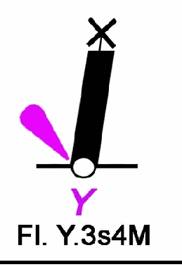

Cosa indica la caratteristica del segnale marittimo rappresentato in figura, posto a Sud del porto di Piombino?

Vuoi segnare perché hai sbagliato?
Facoltativo. Nel mock la scelta non viene conservata.

Facoltativo. Nel mock la scelta non viene conservata.
Scegli una risposta